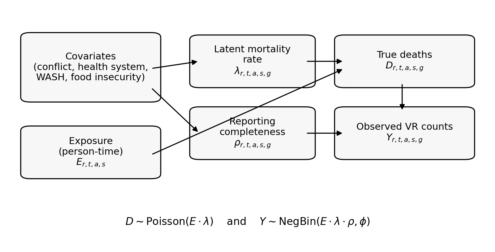

Schematic overview
The figure below summarises the modelling assumptions in
vrcmort.
- Covariates (especially conflict intensity and measures of system functioning) can affect both the latent mortality rate and the reporting completeness.
- The latent mortality rate generates true deaths given exposure (population or person-time).
- The reporting process governs what fraction of true deaths appear in VR.
- The observed VR counts are modelled with a negative binomial likelihood around the expected value.

How to read the diagram
Nodes
- Exposure is the person-time at risk.
- Latent mortality rate is the death rate per unit exposure.
- True deaths are the deaths that truly occur.
- Reporting completeness is the probability a true death is recorded in VR.
- Observed VR counts are what you analyse.
Edges
- The arrow from covariates to represents the mortality submodel, for example a positive effect of conflict on trauma mortality.
- The arrow from covariates to represents the reporting submodel, for example conflict reducing the completeness of non-trauma registration.
- The arrows from exposure and to represent the death-generating process.
- The arrow from to represents under-reporting.
Where does age-selective reporting fit?
The base model includes an age-selective reporting penalty applied after conflict begins (usually only for non-trauma causes). In the diagram this is part of the reporting node .
A practical way to think about it is:
- if the observed VR age distribution suddenly shifts younger,
- and there is no plausible demographic explanation on the population side,
- then the model will tend to attribute this to lower completeness for older ages.
The vignette Under-reporting and Age Structure goes through this in detail.